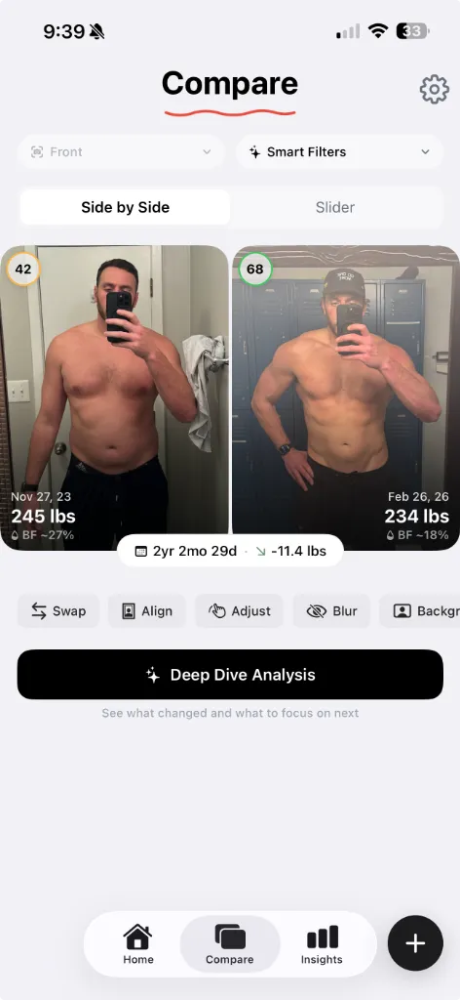

Best Body Fat Calculator from Photo: Why AI Beats Smart Scales
Smart scales lie to you with confidence, giving you the illusion of precision. Here's why relying on an AI body fat calculator from a photo provides a far more accurate trend line for your training.

The beta is live — try it free.
Join the Beta on TestFlightSmart scales lie to you with confidence, giving you the illusion of precision. They tell you you’re at 14.2% body fat down to the decimal point — but tomorrow morning, that same scale will tell you you’re at 16.5%.
The real reason a body fat calculator from a photo is better than a scale is that it doesn't care how much salt you had for dinner.
A smart scale is essentially just a calculator doing a "best guess" based on how fast a tiny electrical current moves through your legs via Bioelectrical Impedance Analysis (BIA). Because muscle holds more water than fat, it conducts electricity differently. If you are highly hydrated, it thinks you’re lean. If you’re slightly dehydrated from a long run or a sauna session, it thinks you’re fat.

It’s a frustrating loop for someone training as hard as you are. You eat perfectly on your cut, do your cardio, and step on the scale only to see weird 2% daily jumps that drive you crazy.
Why AI photo analysis is different
AI photo analysis solves this problem because it’s looking at geometry and definition, not electrical resistance. It’s essentially a highly advanced, digital version of the traditional "mirror test," but mathematically backed by data from thousands of DEXA scans.
For a runner, lifter, or aesthetic athlete, visual analysis is far more useful because the AI can actually recognize the markers of a lean physique:
- Muscle separation: The AI can detect the depth of the lines between your deltoid and your tricep, or the visibility of your serratus anterior.
- Vascularity: It registers the visual texture of your skin that only appears at lower body fat percentages.
- Proportionality: It evaluates where your body naturally stores stubborn fat (like the lower abdomen or lower back) to gauge the smoothing effect over underlying muscle.
A smart scale is literally blind to all of these visual indicators.
A mathematically sound trend line
By extracting actual data from the visual boundaries of your physique, a body fat calculator from a photo gives you a much steadier trend line without the daily static. It measures the physical, aesthetic reality of your body.

When you have a reliable baseline, you can finally trust the data to tell you if your current training and nutrition protocol is working. The most common pitfall for athletes is "body recomposition" — dropping fat while adding muscle simultaneously. On a normal scale, this looks like zero progress. Through AI photo estimation, it becomes undeniably obvious.
Detail beyond just a number
A piece of glass you stand on in your bathroom boils your entire physique down to one percentage point. A dedicated photo tracking platform goes much deeper.

With an app like GainFrame, the analysis isn't just a number. The AI performs a "Deep Dive Analysis" that scores your individual muscle groups, identifies areas of strength, and flags lagging body parts. It tells you exactly what changed between your photos month over month — recognizing when your midsection tightened up and your shoulders developed a clear "capped" look.
Stop letting a piece of glass dictate your mood
If you're serious about your training, you need better instruments than a hydration-sensitive electrical scale. Your gym selfies are the most accurate data source you have — if you know how to read them.
Import your progress photos into GainFrame, get a mathematically sound AI estimation of your body fat, and build a timeline that proves your hard work is paying off.
Related posts
- 7 Best Body Transformation Apps in 2026 (Ranked & Compared)
- How to Calculate Body Fat from a Photo Using AI
- How to Measure Muscle Gain Without a Scale
- Future Physique: See Where Your Body Is Headed
- Understanding Your AI Physique Score
Try GainFrame free
AI body composition from your progress photos. No account needed.
Join the Beta on TestFlightRequires iOS 17+ · iPhone only